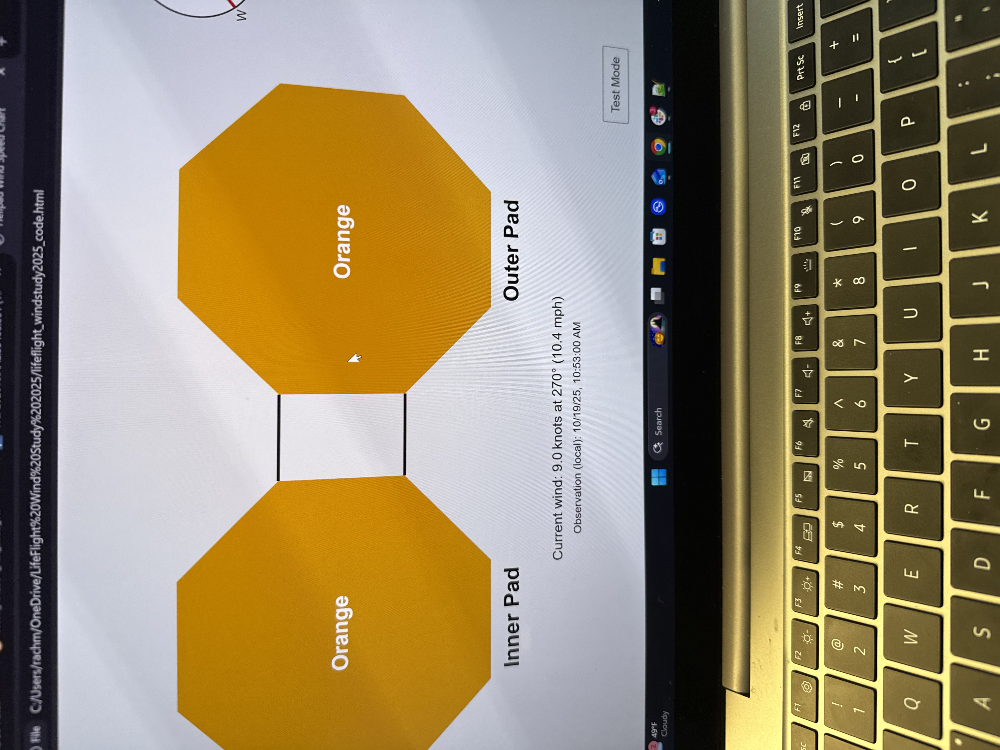

Experience
Engineering Experience
Propulsion / Fluids Engineer
Purdue Space Program
West Lafayette, IN
- Supported fluid system design for an entry in the International Lander Challenge.
- Designed waterline routing and produced piping and instrumentation diagrams (P&IDs) for fluid system documentation.
- Contributed to the design of rocket tanks, diffusers, and ground support equipment (GSE).
Engineering Intern
Vanderbilt LifeFlight
Nashville, TN

I developed an HTML/JavaScript application displaying real-time helipad turbulence conditions for flight operations.
I integrated wind-tunnel data from RWDI with established operational turbulence thresholds to improve operational awareness for pilots and dispatch personnel.
I collaborated with engineering and aviation personnel to improve flight-safety decision-making.
Experimental Fluid Dynamics & Aerodynamics Laboratory
Purdue University
West Lafayette, IN
- Operated subsonic and supersonic wind tunnels to conduct aerodynamic and fluid dynamics experiments.
- Processed experimental data to evaluate flow behavior and aerodynamic performance.
- Designed, proposed, and executed two team-based experimental research projects.
- Prepared technical reports documenting experimental methods and findings.
Structural Engineer
Purdue Design Build Fly
West Lafayette, IN
- Designed and manufactured structural components for an RC aircraft competing in the AIAA Design/Build/Fly competition.
- Collaborated with a multidisciplinary team to design the aircraft fuselage in SolidWorks.
- Fabricated wooden aircraft structures and evaluated manufacturability through iterative design.
Campus & Community
Mentee
Women in Engineering at Purdue
West Lafayette, IN
- Participate in networking events and seminars supporting the success of women in engineering.
- Develop professional communication, networking, and career-development skills through mentorship programs.
Volunteer
Adventure Science Center
Nashville, TN
- Taught and supervised children through hands-on STEM activities, including microscopy and woodworking.
- Collaborated with fellow volunteers to create engaging educational experiences.
Resident
Global Engineering Learning Community
West Lafayette, IN
- Collaborated with students from diverse backgrounds to develop a global perspective and strengthen intercultural communication skills.
- Participated in discussions and activities examining engineering challenges from an international perspective.